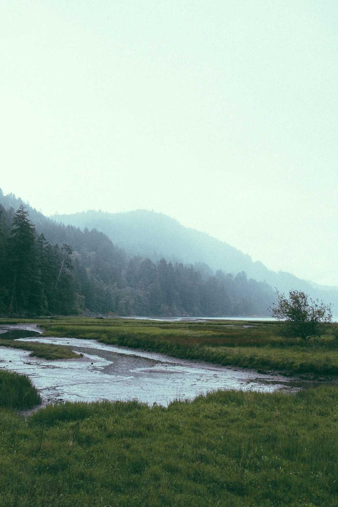

01 — WORKS
作品集
这里收录了我近几年的部分拍摄。点击任意一张可以放大查看，支持键盘左右方向键切换。 （以下作品均为占位素材，非真实拍摄）
该分类下暂时还没有作品。

02 — ABOUT
关于我
你好，我是眦。一名摄影爱好者，也是一名学生。 相机最初只是用来记录旅行，后来慢慢变成了我看世界的方式。
我喜欢清晨和黄昏的光，喜欢城市里人与人之间短暂的擦肩， 也喜欢那些安静得几乎没有故事的角落。比起完美构图， 我更在意照片里有没有留下当时的温度。
- 6年
- 拍摄经验
- 120+
- 精选作品
- 15+
- 到访城市
- 机身Sony A7 IV
- 镜头24-70mm F2.8 / 35mm F1.4
- 后期Lightroom · Photoshop
03 — CONTACT
一起拍点什么吧
约拍、合作、或者只是想聊聊摄影，都欢迎给我发消息。 通常我会在 24 小时内回复。
hello@example.com※ 此邮箱为示例地址，无法接收邮件；下方社交账号链接均为空占位，未指向真实账号。
NOTICE · 虚构内容声明
本页内容均为演示用途
这是一个用于展示网页结构与排版的示例站点。页面上出现的所有摄影作品与个人信息 均并非真实内容，不指向任何真实的人、事、物，仅作占位与演示之用。
- 摄影作品图片取自 picsum.photos 的随机占位素材，非本人拍摄
- 作品标题「晨雾中的山脊」「侧脸」等名称均为虚构
- 作品分类风光、人像、街拍、建筑的归属为演示用随机分配
- 个人简介姓名「眦」、学生身份、拍摄经历等描述均为虚构
- 统计数据6 年经验、120+ 作品、15+ 城市等数字均为虚构
- 器材信息机身、镜头、后期软件等参数仅为示例文本
- 联系方式邮箱 hello@example.com 为示例地址，无法接收邮件
- 社交账号Instagram、小红书、微博、微信均为空链接，未指向真实账号
如需正式上线，请将上述内容全部替换为自己的作品与真实信息。如有雷同，纯属巧合。